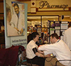

-
Roadmap
This map provides an overview of the path medical students take from orientation to residency. Click on the underlined links to learn more information.
START: RELAX, enjoy your summer, and start psyching yourself up for this challenging and rewarding journey.
Make new friends and take in as much information as possible at the first year orientation. Acquire your first official white coat!
-
First Year
1st year, Fall: Get to know your classmates, professors, and the available extracurricular activities. Study efficiently and begin to identify your personal interests, strengths, and weaknesses. Soak up as much information as you can, and enjoy your fall break. Class schedules vary by campus, but a typical day (broken link) includes lectures in physiology, anatomy, histology, and biochemistry, all mixed in with lots of time for the cadavers. Get great tips on how to succeed and stay healthy on the Wellness website.
1st year, Spring: While keeping up with your basic science classes and getting your first introduction to history taking, plan a fun or service oriented spring break trip with your classmates. In addition, pay attention to emails from Jose Espada and start planning your summer vacation. Most students do clinicial shadowing or laboratory research, but international travel and other volunteer opportunities are available as well!
-
Second Year
 2nd Year, Fall: Visit the Careers in Medicine website and start thinking about specialties. You will continue to attend lectures during second year, focused mainly in Pharmacology and Pathology. Enjoy your last fall break!
2nd Year, Spring: Register for the USMLE Step 1 (broken link) exam, or the "boards," which will cover the basic science and medicine courses learned up to this point. Study for your finals, prepare for the boards, and maybe take a trip for your last spring break. In addition, plan your third year rotation schedule.
2nd Year, Summer: By the end of second year, IUSM's nine competencies will be achieved at a level 1. You can check out how exactly each competency is evaluated during your four years using this chart. Take the USMLE step 1 exam!! Third year begins in mid-June - no rest for the weary…
-
Third Year
3rd Year, Summer: There will be a third year orientation in mid June. The 1st block of rotations will begin. Over the course of the year, 3rd years will complete three blocks: Pediatrics/Family Medicine/Vacation, Surgery/OB/Sub-specialty, and Medicine/Neurology/Psychiatry. A written NBME Subject Exam will be given at the end of each clerkship. Letters of recommendation for your residency application should be obtained throughout the year.
3rd Year, Fall: The second block of rotations is complete by early February. Spend time with your family over the short Thanksgiving and Holiday breaks, and continue working to discover what specialty is right for you. Keep exploring the Careers in Medicine website, which has tools to assess your compatibility with different specialities.
3rd Year, Spring: The final block of clinical rotations lasts from February to mid-May. Early on, meet with advisors and attend the residency fair to learn about available specialities and plan your 4th year. The 4th year schedule will consist of 3 months of core rotations in radiology, emergency medicine, and an internal medicine sub-internship. The sub-l rotation provides rigorous clinical exposure that will resemble your time as an intern in the future. The schedule is very flexible, with the remaining 9 months containing vacation months and your choice from about 370 electives. Continue narrowing your speciality choice.
-
Fourth Year
4th year, Summer: The final year of medical school beings on June 1 and the schedule is the most flexible and fun. Begin your residency application and register for the residency matching program. Your residency application will include an application form, Dean’s letter, transcript, letters of recommendation, and a personal statement. Again, the Careers in Medicine website is useful for tips to completing the application. The application is usually completed by mid-October.
4th year, Fall: Mock interviews are available to help you prepare for residency visits. All recommendation letters must be submitted to the Student Affairs office. The USMLE Step 2 exams are completed by January 31 and test both clinical skills and clinical knowledge.
4th year, Spring: On Match Day in mid-March, you and your classmates will learn together what residency program you have been awarded. Having passed the Step 1 and 2 exams, completed all necessary coursework, and achieved Level 3 in at least three of the nine competencies, you will graduate in mid-May. Congradulations!
-
Residency
Residency programs will vary by the location and area of concentration. In your first year, as an intern, you will forfeit personal time in exchange for a greater responsibility to patients. As a resident, you will be in charge of the interns and medical students on your team, and responsible for the work they do. A residency can last between 3 and 5+ years, and can be followed by a fellowship for some specialties. After meeting specific requirements and passing the USMLE Step 3 exam, which tests your ability to assess clinical cases and manage patients in an unsupervised setting, you will be eligible for your medical license. Enjoy your career as a successful physician!